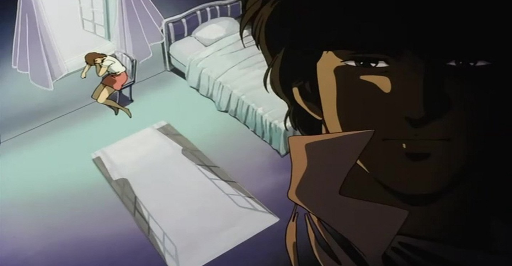

Comme toutes les grandes séries, City Hunter a été décliné sur tous les supports: Manga, Série TV, OAV, TV Special, Anime comics, CD, Ramicards, horloge, tasse, etc. Et bien sûr, la plus prestigieuse des adaptations: le cinéma. Une adaptation cinématographique se doit d’être aussi complète et aussi riche que possible. L’animation doit être parfaite, le scénario prenant, il faut surclasser le meilleur épisode de la série. La bande son doit elle aussi être à la hauteur de l’événement et contribuer au succès du film. Bref, ce genre de produit doit être l’ultime perfection, la référence, le point de repère dans l’œuvre. Voici, tout chaud sortit des fourneaux (10 ans après), l’analyse critique de “La destination du Magnum de l’Amour” (A Magnum Of Love Destination).

Enfin un boulot intéressant !
Cela faisait 48 jours que personne ne nous offrait du travail. Ryo était de plus en plus intenable. Et voilà qu’une jolie fille est venue nous voir au Cat’s Eye café pour nous demander de retrouver son père. Elle s’appelait Nina et c’était l’amie de Maki, une fille a qui l’on avait déjà eu affaire dans nos début, en temps que fille du général d’Umibozu pendant la guerre. En plus une bombe a explosé et un espion s’est fait assassiné le jour de son arrivée à l’aéroport. Comme elle s’était enfuie, son grand-père était furieux après elle. Ryo et Saeko et toute l’équipe se sont aussitôt mis au travail pour retrouver le père de Nina et l’assassin de l’espion.
C’est bizarre, parce que plus on avançait et plus les deux pistes se rapprochaient. Et puis c’est devenu évident: le père de Nina était l’assassin de Nina. Pourquoi est-il un assassin et pourquoi a-t-il abandonné sa fille avant qu’elle ne naisse? Moi je ne sais pas trop, apparemment c’est un espion, et il mettait sa femme en danger, du coup il a préféré son métier à sa femme. Ha, les hommes, tous les mêmes! Enfin j’en était là de mes réflexions quand un commando est arrivé sur l’immeuble et a enlevé le grand-père de Nina, Klaus. Il a encore fallut que je m’accroche à l’hélico. C’est une tactique à Ryo et moi: je me fait enlever et Ryo trouve la base de nos ennemis grâce au micro-émetteur qui se trouve dans mon bouton de chemise. Je sais, c’est risqué, mais encore une fois ça a marché, Ryo et Umibozu sont arrivés et se sont tranquillement occupés du commando.
Maintenant le bâtiment est en feu et nous sommes sauvés, mais le père de Nina, Hersen est là, et il a provoqué Ryo en duel pour avoir une réponse à sa question. Même si l’enjeu était inutile, Ryo a accepté et Umibozu fait l’arbitre. J’ai vraiment peur pour Ryo, quelque soit l’issu du combat, Nina ou moi auront perdus un être cher. Mais je ne veux pas qu’ils se battent,… RYOO, NOOON!….
Un épisode un peu plus long ?
S’il y a bien quelque chose que l’on retient après avoir regardé ce film, ce sont les génériques. Ce sont sans doute les meilleurs génériques de City Hunter. Le premier est plus centré sur le personnage de Ryo, on le voit s’habiller, se promener en ville, regarder passer les filles. Bref, le personnage est mis en situation, dans son élément (la ville (ou les filles ?, NDErwan)). Pourtant on nous cache son aspect d’obsédé jusqu’au bout: son visage ne change même pas d’expression en regardant passer une fille en maillot de bain.
Le générique de fin par contre exprime plus les sentiments qui animent Ryo et Kaori, l’un envers l’autre, ce qui, en fin de compte n’est que le prolongement en image des discussions entre Ryo et Kaori à la fin du film. Mais entre les deux génériques il y a une histoire (faut pas croire!). Si on la compare à un épisode de la série, on se rend compte qu’elle est quand même plus complexe et plus recherchée, tout en restant cohérente et compréhensible. Il y a une double histoire en fait: Nina recherche son père, et Hersen (son père) recherche le microfilm contenant des documents secrets. Tout cela forme un cercle vicieux qui sera brisé par Ryo.
On remarque aussi que dans un épisode, on suit Ryo et sa cliente de bout en bout, et Saeko est parfois elle aussi sur la piste du méchant, mais par faute de temps on ne la suit pas dans son enquête. Elle explique juste à Ryo son implication dans l’affaire au moment venu. Dans le film, toutes les scènes d’ordinaire ellipsées, sont ici mises en avant, ce qui enrichit considérablement l’histoire, mais on se rapproche trop de l’épisode classique (on pourrait même raccourcir le film à 25 min en gardant le principal).
Les dessins et l’animation sont soignés mais ne sont pas beaucoup plus travaillés que dans la série. C’est d’ailleurs à peu près la même équipe qui a réalisé la troisième série, ( a série et le film sont sortis la même année: 1989) or graphiquement la troisième série perd en qualité par rapport à la seconde, qui reste la meilleure du lot.
Par contre la partie la mieux réussie reste, avec les génériques, la bande son. Même si elle reste dans l’esprit City Hunter, elle est plus présente que d’habitude grâce à la représentation au piano de Nina dont le morceau accompagne le duel final, et dans les génériques.
Le côté philosophique (moi j’aurais dit la dimension humaine, NDErwan), à savoir, est-ce que Kaori ne risque pas sa vie inutilement en restant avec Ryo a été bien abordé avec l’exemple inverse de Hersen qui a fuit la mère de Nina pour éviter de lui causer des problèmes. Il en a souffert toute sa vie et avec lui, Nina et sa mère. Ryo reconnaît lui-même à la fin qu’il a besoin de Kaori comme partenaire. C’est le seul point sur lequel l’intrigue générale avance.
0 % originalité, 100 % sécurité
Pour les ingrédients, prenez: une jolie fille qui a un problème, un pays d’Amérique du sud en conflit, un méchant habile au tir, un gros méchant pas beau pour Umibozu, une unité d’élite “imbattable” dans une propriété privée pour l’entracte, un hélicoptère, un duel, un lien avec le passé pour faire comme si l’intrigue avançait (ici Maki), mettez Saeko, Reika, Umibozu et Miki sur le coup, attendez que Ryo et Kaori soient à découvert pour pouvoir accepter l’affaire, n’oubliez pas les massues, secouez et vous avez sans doute l’épisode le plus classique de City Hunter.
Il est vrai qu’en restituant le film dans son époque il était difficile de faire autrement: le manga tout comme la série TV marchaient encore très bien, le film ne pouvait donc pas conclure, ni modifier les rapports entre les personnages de peur de créer des incohérences, mais pourquoi ne pas avoir mis plus Kaori en danger, ou déplacé l’action dans un endroit inhabituel ? Pour ce film, on attendait du nouveau, du sensationnel. On a eu du banal, du banal bien fait, voire très bien fait, mais du banal quand même. En définitive, cet opus cinématographique regroupe tous les éléments pour faire un bon City Hunter, sans pour autant innover. Ce film n’est ni emballant, ni dérangeant, mais juste satisfaisant.
Il est difficile en tant que fan, de proposer une critique objective sur une oeuvre. On a déjà une prise de position positive, et le jugement final est donc moins fiable que celui d’une personne qui n’a pas de parti-pris : soit on est trop gentil parce qu’on aime pas cracher sur son personnage fétiche, soit on se force à être méchant pour ne pas être critiqué. J’ai essayé d’être le plus objectif possible, mais je pense avoir été plus méchant quand même, enfin vous restez seuls juges…